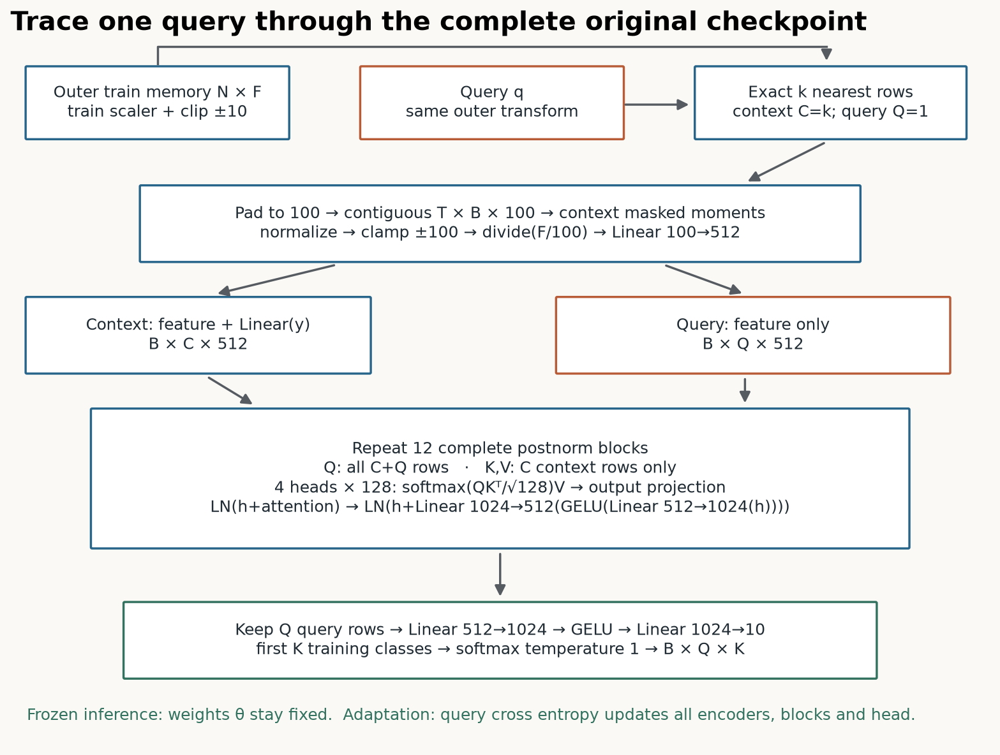

LoCalPFN: computation and evidence card

Exact inference¶
Fit outer train StandardScaler (population std), clip ±10, retrieve k = min(floor(10√N_train),1000) eligible rows per query. Pad to 100 and form contiguous T×B×100 inputs; compute explicit masked context sum/count and centered-square sample variance. Normalize all context/query values with epsilon 10⁻⁶, clamp ±100, then divide by F/100 and run the full original TabPFN. Training defines the K-class output axis even when a local context omits a class.
Shared training¶
Sample B anchors; exclude each original anchor ID; retrieve C+Q rows; use a shared permutation across batch columns; split into disjoint context and query IDs per episode. Query targets appear only in mean cross entropy over B×Q queries. The queries' shared context generally differs from each query's exact k-neighbor context.
Complete model¶
B×(C+Q)×100 → feature Linear 100→512; add Linear(y) to context only. Twelve postnorm attention/FFN blocks: four heads, width 128/head, hidden 1024, context-only K/V. Query head 512→1024→10; first K logits, temperature 1 softmax. Original synthetic pretraining is not rerun. Whole model/source parity includes 152 gradient tensors and one full AdamW update.
Selection and source discrepancies¶
Paper Appendix A.2.2: AdamW .01 learning rate/.01 weight decay, no scheduler, evaluation every 30 steps; globally hand-tuned learning rate. Released CLI defaults 1e-5. Local panel records both predeclared arms with identical episodes. Step 0 and 30 are validation candidates, earliest maximum AUC wins; test is scored only afterward. This is not a long early-stopping study.
Paper footnote 2 excludes anchors; released training retains them. This lab follows the paper. The official evaluation function derives class count from query labels; the lab fixes K from training. Official local normalization occurs before 100/F scaling and does not use historical power transforms or temperature .8.
Costs¶
For R query targets and k context rows, exact local attention has Rk(k+1) permitted pairs/head/layer. B shared contexts have Bk²+Rk. With R=32, k=100, B=2: 323200 versus 23200 scores, a 13.93× arithmetic ratio. The visible backbone computes rectangular attention; the original source uses a square boolean mask. This permitted-pair count is not the original materialized tensor size or a runtime claim.
Evidence boundaries¶
All rows of diabetes/blood transfusion/WDBC; new stratified 80/10/10 splits seeds 7/17/27; B=2, Q=16, 30 updates; paper dynamic k; inference microbatch 4. No categorical/large-scale roster, original TabZilla folds, tuned trees, global FT interaction ablation, synthetic pretraining or original GPU timing. INCOMPARABLE as paper-result reproduction. The paper's final Table 9 caption is broader than its subgroup evidence; all-task mean for global FT→global FT+kNN rises .885→.887 while medium/large falls .916→.903.
Final paper · Pinned sources · Whole-model check · Fresh evidence · Statistics · Reproduction.
EXIT: five live functions, actual neighbor/episode IDs, selected/final weight identities, validation history, paired scores and an interpreted result in data/cache/l067-student/exit-v2.json. Original weights are restored after all arms. Source identity includes nested helper dependencies and defaults; actual runtime and weight identities are separate.
Source precision: contiguous T×B×100 masked reductions and division(F/100) are preserved. On a recorded float32 constant-feature fixture, official cancellation gives 2.399 while a mean/std shortcut and float64 yield 0. See precision diagnostic; this is fixture-specific numerical behavior, not a desired constant-feature effect.
AUC precision diagnostic: the discarded diabetes seed 7 paper-rate final state has saved validation positive-class probabilities spanning only about 2×10⁻⁸ around 0.020259, but AUC 0.52556. Tiny perturbations or ties can change ranks substantially while preserving close probability agreement. Inspect score spread; this collapsed state was not selected.
| Dataset | Arm | AUC mean ± SD | Log loss mean ± SD |
|---|---|---|---|
| diabetes | global_all | 0.8331 ± 0.0207 | 0.4746 ± 0.0219 |
| diabetes | random_k | 0.8242 ± 0.0263 | 0.4864 ± 0.0309 |
| diabetes | local_frozen | 0.8326 ± 0.0298 | 0.4813 ± 0.0357 |
| diabetes | local_ft_paper_lr | 0.8326 ± 0.0298 | 0.4813 ± 0.0357 |
| diabetes | local_ft_release_lr | 0.8326 ± 0.0298 | 0.4813 ± 0.0357 |
| blood_transfusion | global_all | 0.7968 ± 0.0387 | 0.4516 ± 0.0292 |
| blood_transfusion | random_k | 0.7838 ± 0.0572 | 0.4755 ± 0.0186 |
| blood_transfusion | local_frozen | 0.7935 ± 0.0387 | 0.4579 ± 0.0296 |
| blood_transfusion | local_ft_paper_lr | 0.7935 ± 0.0387 | 0.4579 ± 0.0296 |
| blood_transfusion | local_ft_release_lr | 0.7896 ± 0.0322 | 0.4599 ± 0.0265 |
| wdbc | global_all | 0.9978 ± 0.0038 | 0.0512 ± 0.0318 |
| wdbc | random_k | 0.9956 ± 0.0065 | 0.0624 ± 0.0395 |
| wdbc | local_frozen | 0.9974 ± 0.0046 | 0.0484 ± 0.0357 |
| wdbc | local_ft_paper_lr | 0.9974 ± 0.0046 | 0.0484 ± 0.0357 |
| wdbc | local_ft_release_lr | 0.9974 ± 0.0046 | 0.0484 ± 0.0357 |